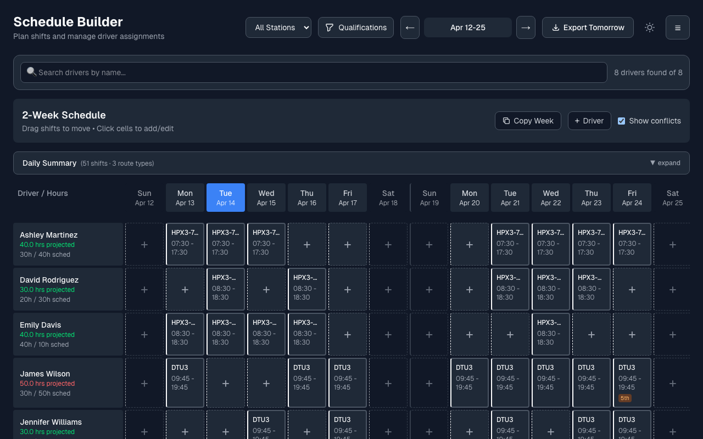
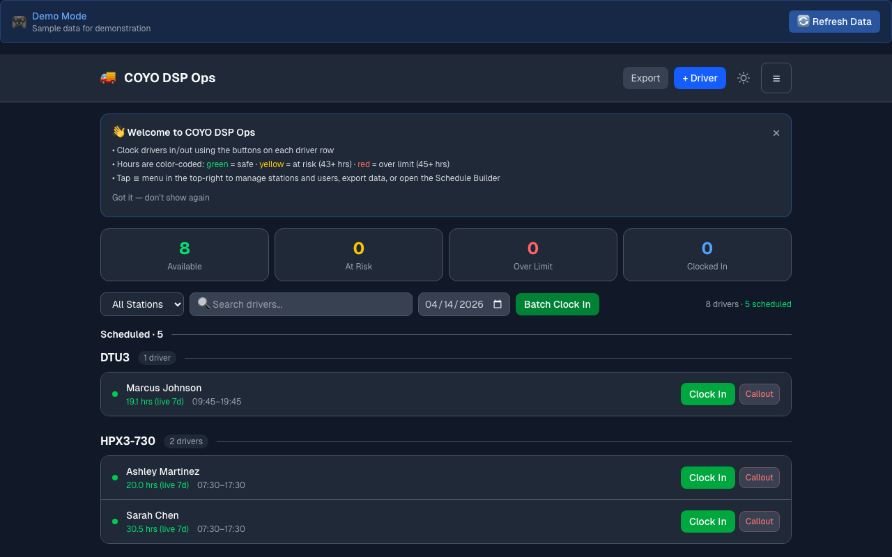
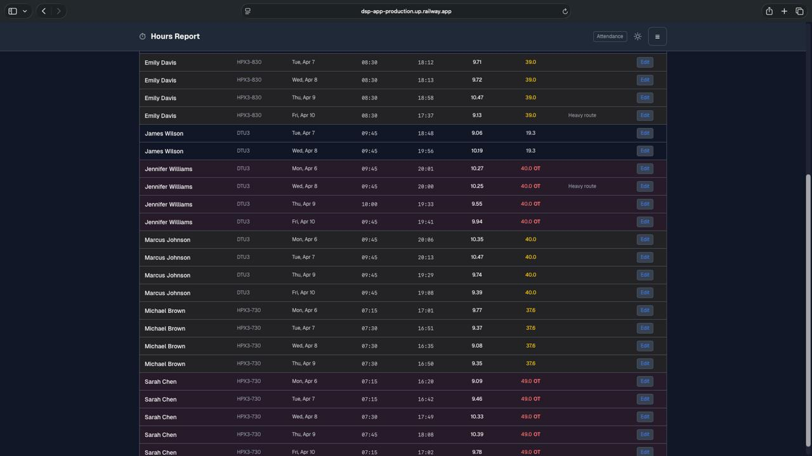
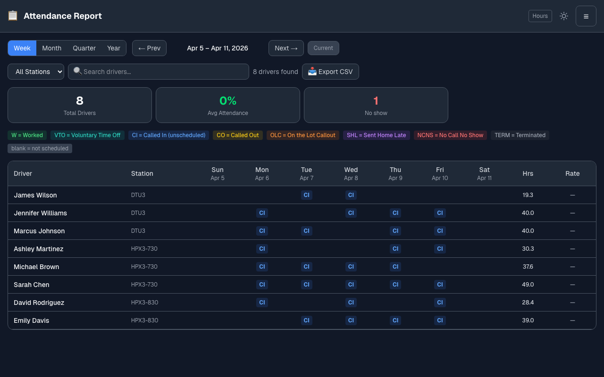
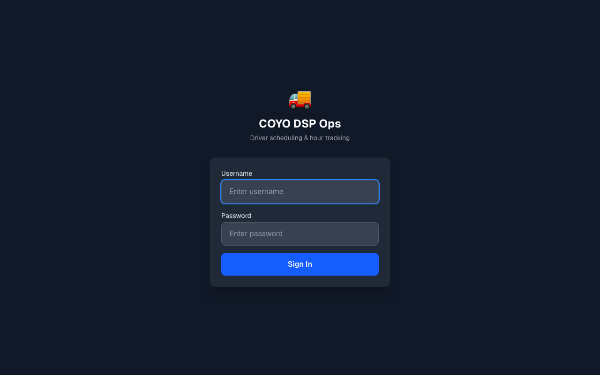

⏱️
Hours tracking with DOT compliance alerts
Track daily and weekly hours, flag overtime trends early, and surface DOT risk before it turns into a problem for dispatch or leadership.
DSP Forge is built around the operational mess dispatchers deal with daily: hours, coverage, callouts, compliance, and reporting. The goal is simple, fewer spreadsheets and faster decisions.
Track daily and weekly hours, flag overtime trends early, and surface DOT risk before it turns into a problem for dispatch or leadership.
Build schedules ahead of time, see staffing needs across the next two weeks, and make adjustments without rebuilding everything from scratch.
Keep callouts, absences, and reliability trends in one place so morning coverage and coaching conversations are based on real data.
Use it from the dispatch desk or on the move. The interface stays clear and usable on phones and tablets.
Internet is not always reliable at the station. DSP Forge continues working and catches up when service returns.
If your DSP needs a workflow that does not exist yet, DSP Forge can build it, from custom dashboards to branded tools and automation.
The product focuses on the screens teams actually live in during the day: schedule changes, hours review, attendance, and at-a-glance operations visibility.

Two-week planning designed for dispatchers who need to move fast when coverage changes. Click to expand

Fast visibility into the day, driver status, and action items. Click to expand

Review weekly totals, fix issues quickly, and stay ahead of labor problems. Click to expand

See patterns and follow through with clean reporting instead of manual rollups. Click to expand

Clean, fast access for teams that do not have time for bloated software. Click to expand